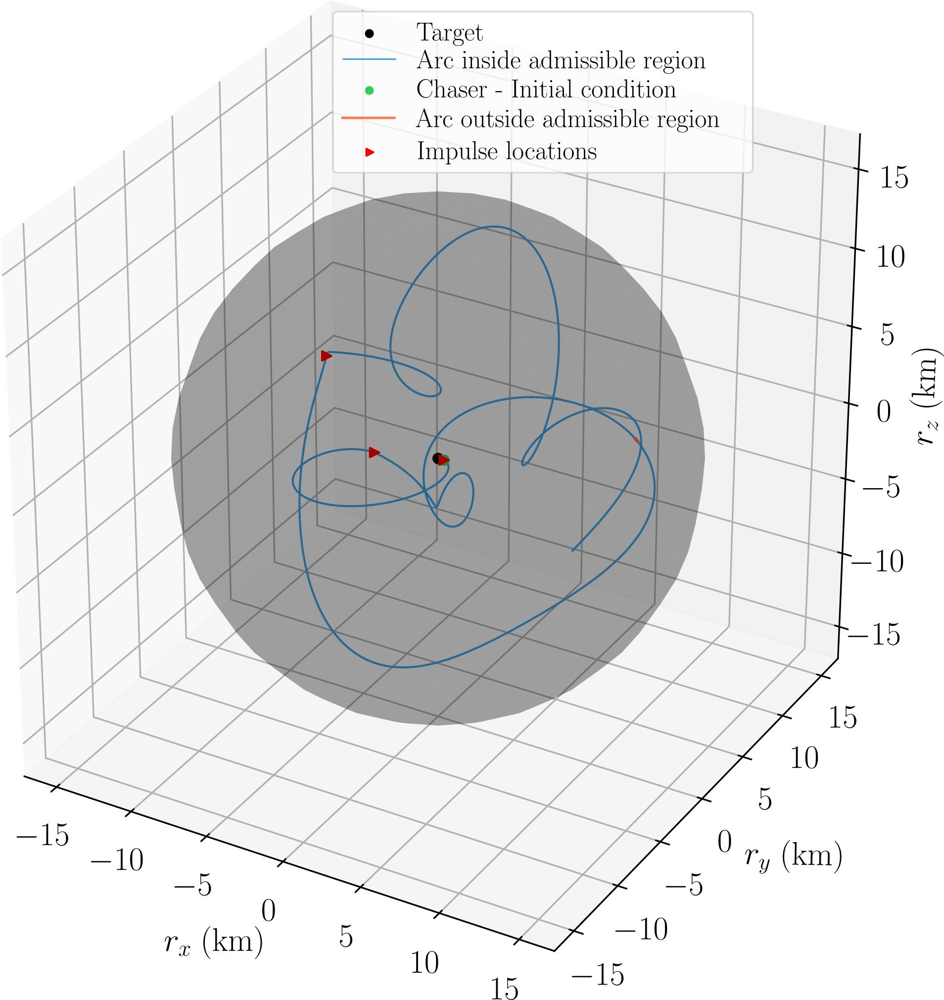

Cislunar Relative Motion Control
Rendezvous and proximity operations beyond Earth orbit.
Overview
Cislunar missions operate between Earth and the Moon, including the orbits planned for the lunar Gateway. The dynamics are richer than in low Earth orbit. Three-body effects make relative motion harder to predict and control.
This project develops impulsive control methods for relative motion in cislunar environments. The methods plan short thruster-firing sequences for rendezvous, inspection, and formation keeping. The constraints are accuracy and propellant use.
The work supports the growing set of missions targeting near-rectilinear halo orbits and other cislunar trajectories.
Results & media
The project figure shows a relative trajectory around an admissible region, with impulse locations along the arc.
Impulsive cislunar guidance
The method chooses impulse timing, location, magnitude, and direction to loiter near a target while satisfying path constraints over the full horizon. The validation case uses relative motion near a selenocentric near-rectilinear halo orbit.
- DynamicsNon-stationary cislunar regimes where simple two-body intuition fails.
- ControlFinite impulse sequence optimized in a model predictive framework.
- ConstraintPath constraints enforced continuously over the time horizon.
